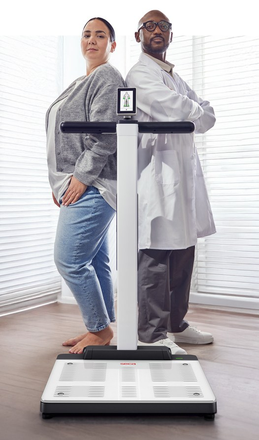

ENHANCE · PRIVATE HEALTH
Go beyond the
standard health check.
Consider body composition as an additional layer of information in a clinically led health assessment.

FOR PRIVATE HOSPITALS & HEALTH SERVICES
Additional information.
Not a replacement for appropriate tests.
For executive health, preventative healthcare, longevity clinics and premium screening providers, the question is where additional insight serves a genuine clinical purpose.
| Standard health assessment | Assessment with body composition |
|---|---|
| History, clinical review and appropriate tests as defined by the service. | The same appropriate clinical assessment, with body composition where suitable. |
| Weight and BMI offer an established starting point. | Additional information on fat mass, skeletal muscle and selected parameters. |
| Discussion of the findings from the existing package. | Opportunity to explain how body composition relates to the clinical question. |
| Follow-up according to clinical need. | Repeat body composition measurement if there is a clear purpose and suitable interval. |
seca UK: mBCA Alpha · NICE NG246: overweight and obesity management
A PRACTICAL SERVICE GUIDE
Build the proposition before the financial model.
BUSINESS-CASE GUIDE
Building a Premium Body Composition Health Assessment
Clinical purpose, patient communication, operational fit and a transparent commercial scenario.
Clear questions, practical considerations and referenced clinical context. Read online or keep a printable copy.
Read the guidePRIVATE HEALTH OPPORTUNITY CALCULATOR
What could an enhanced assessment add?
Explore a gross-revenue scenario using your own service assumptions. No seca purchase price is assumed.
YOUR COMMERCIAL ASSUMPTIONS
Starting values are fictional planning examples, not market forecasts or seca pricing.
INDICATIVE ANNUAL OPPORTUNITY
combined potential additional gross revenue
Illustrative scenario based on user-entered assumptions.
Gross revenue is not profit or cash flow. Revenue-based payback excludes operating costs and is not a full investment appraisal.
Calculation method and limitations
Enhanced assessments per year = monthly assessments per location × 12 × locations × percentage offered × expected uptake. Additional assessment revenue = enhanced assessments × additional package value. Follow-up revenue = enhanced assessments × follow-up measurements × optional follow-up value.
Combined opportunity is the sum of these revenues. Revenue-based payback, when entered, = equipment investment ÷ combined annual revenue × 12 months. If revenue is zero, payback cannot be calculated.
The scenario assumes steady-state annual volume and that the entered follow-ups occur in the modelled year. It excludes ramp-up, staffing, training, software, servicing, finance, tax, cancellations and opportunity cost. Do not double-count a follow-up already included in the package price. Validate eligibility, uptake and willingness to pay through a pilot.
YOUR NEXT STEP
Explore the clinical and operational fit.
Use the guide and scenario to frame a demonstration or a pilot discussion.
Explore the right fit for your service.
Evidence & further reading
Sources checked 14 September 2026. General clinical education for healthcare professionals. Use current instructions for use and clinical judgement for individual patients.